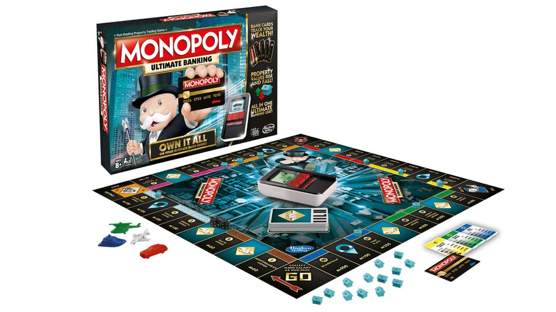

El juego más vendido de la historia
Antes
Un juego creado con la función de servir como herramienta para enseñar las teorías acerca de la justicia social y económica extraídas del estudio titulado Progreso y Miseria de Henry George
Monopoly
Comercializado por ver primera en el año de 1936.
A lo largo de 80 años, el juego a sufrido una notables evolución. Sus múltiples ediciones y sus tantas versiones han dado a pie a que se cambiara desde la caja que lo contiene hasta los elementos que lo componen. Logrando así, mantenerse como el favorito a través de las décadas
Ahora
Con los años la finalidad del juego cambió para solo disfrutar un buen rato, negociando propiedades y hasta haciendo uso de medios electrónicos para todas las traducciones que requiere el juego.
Con información de Gráfica info, cultura visual